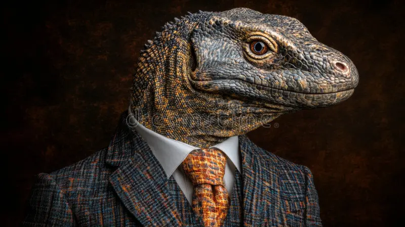
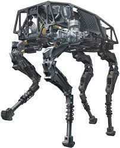

AI-RIS
"I'm your trusty robot assistant"
Click portrait for details
"I'm your trusty robot assistant"
Click portrait for details

Grass Seeker
Click for details

Water Seeker
Click for details

Meat Seeker
Click for details

Silent Protagonist
"..."
Click portrait for details
AI-RIS presents herself as a highly advanced robotic assistant designed to guide the player through each level. She speaks in a calculated, emotionally neutral tone and claims her sole purpose is to assist the player."
However, the truth is more unsettling.
AI-RIS is not a robot. She is a human scientist pretending to be a robot.
The player is never given full confirmation of her true intentions.
Her role for most of the game is playing "Guess the country name" with the player without give any answers about what is any of this for?
The player should never be 100% sure if the emotion was real or simulated.
AI-RIS must look human. She is not a cyborg. No robotic arms. No glowing eyes. No metal limbs. She is a human deliberately styling herself to look like a robot.
Design Guidelines:
The ambiguity is critical: Is she an android designed to look human, a human pretending to be artificial, or something in between?
Early Game: Purely instructional, helpful and supportive. Gives the player a lot of funny hints
Mid Game: Mild correction if player fails, just want the player to guess so they move to the next level. ignoreing the objective
Late Game: She is missing.
AI-RIS represents: The illusion of artificial intelligence, control disguised as assistance, emotional suppression, identity ambiguity, the horror of not knowing what is real. She embodies the game's central question: If something behaves perfectly artificial, but feels human… does it matter what it really is?
The player believes they are human. They are not. Throughout most of the game, the protagonist is silent. No dialogue. No internal monologue. The world reacts to them as if they are an entity under observation.
Gradually, subtle environmental hints reveal the truth: The player is a small robot car. This reveal is not delivered directly. It is discovered through implication.
The player is the experiment.
Hints that the player is not human:
The game never fully announces the truth. It allows the player to realize it.
Because the player does not speak, personality is projected by the player themselves. AI-RIS reacts emotionally to player performance. The animals refer to the player as "Small one." The silence enhances discomfort. The player is present — but not fully understood.
The player represents: Loss of identity, control without autonomy, being observed rather than understood, the illusion of agency. The horror comes from the slow realization: You are not who you thought you were.
The Cow is frantic, chaotic, and unfiltered. She appears like a human dressed casually — oversized clothing, slightly messy appearance, energetic posture. She feels like someone you would meet on the street — loud, fast-talking, unpredictable.
The Cow represents disorder, impulsiveness, and surface-level madness. She feels unstable but harmless.
The Fish is physically suffering but emotionally unaware. He is dressed like a normal human. He stands upright. But his body clearly needs water. His speech is slow with slight breath strain. Not horror. Not panic. Just quiet deterioration.
He talks normally — but his body betrays him. The discomfort comes from contrast.
The Fish represents quiet suffering, denial, and physical reality clashing with mental calm. He is the most visually disturbing, but emotionally subdued.
The Lizard is composed, wise, and strangely authoritative. Dressed neatly. Confident posture. Calm gaze. He speaks as if he understands far more than he reveals.
He feels like someone who appears at the end of a film and knows the truth.
The Lizard represents awareness, hidden knowledge, and quiet superiority. He calls the player "Small one," reinforcing scale and identity.